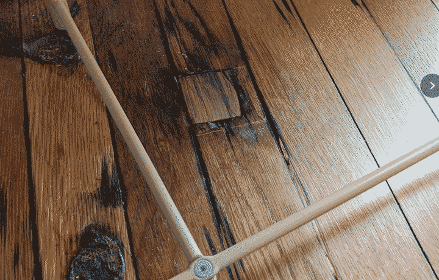
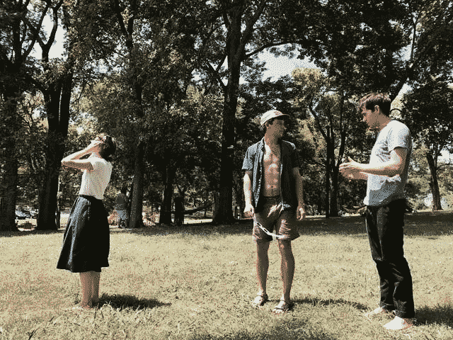
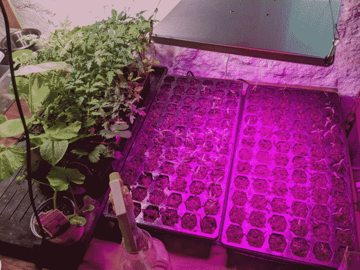
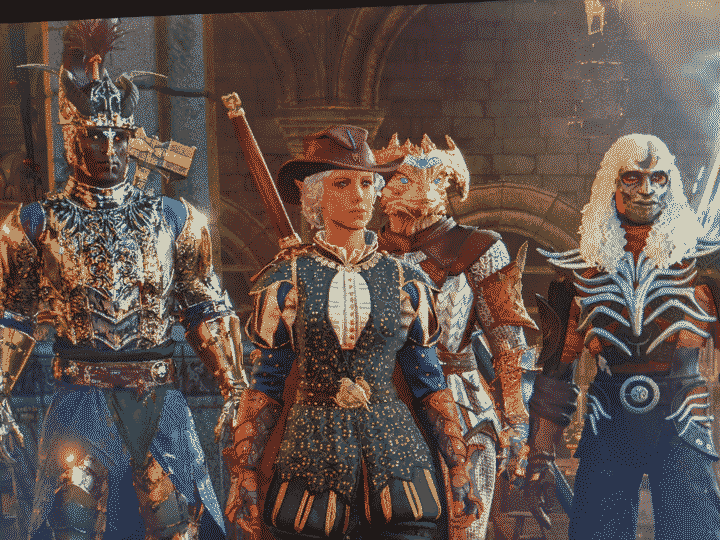
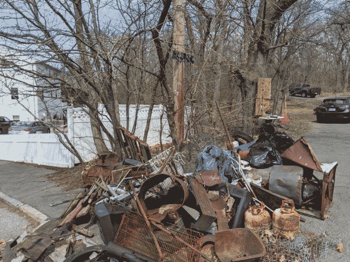

The log is short notes. It's fallen into disuse in favor of private distribution channels like the mysterious chunkypups list. It may resume. Find (even) older entries at {Log Archive}.
Backslide. Into the mode where time becomes sand, fingers spread. Slip slip slip. Work becomes all I do. But I'm catching it this time - we just have a lot going on to start the year and I'm trying to do what I can to pitch in. The problem is I like the technical stuff so much that I become obsessed (maybe addicted, I'm realizing) and I happily work into the wee hours after Meadow is asleep.
Then it gets late, I don't journal, don't do life things. Who suffers? The chunkypups mailing list - that's who. Going to bed early tonight so that I can wake up tomorrow to tackle some things.
Everyone is abuzz here about the winter storm headed our way. Forecasts at the start of the week laughably said "maybe 20+ inches of snow!" which is guffaw-worthy. Now they're saying it's going to be a whole lot of freezing rain. Who knows! Malcolm had a live show in Cookesville though, which was sadly a casualty of the uncertainty. Postponed.
I set up a VM tonight with such a crazy GPU that it costs more than most people's mortgage to use. It's for some high-memory Alden is going to do tomorrow. I called it moneymachine and now the song is stuck in my head.
Let's see what tomorrow evening brings. Weather-wise. I've got the XC skis ready for action and wouldn't mind a bit of sledding with Meadow.
Well, it's real now. We are moving to Nashville. I came to Boston in 2009 to study computer science and stayed for the career opportunities, loud and then quiet music scene (where I met Alejandra), and the wonderful friends we've made over the years.
Becoming a parent has reinforced how important family proximity is. Last year {was a doozy}. There were tough, tough moments, both from the challenge of Keep Baby Healthy and stress from my work. We have friends who would leap to help us here in Boston, but it's intangibly different. It feels like asking for a favor rather than something unconditional. I'll note how lucky we are to have a family like that.
I spent the last week starting to prep the house for a move, packing the basement and de-cluttering. We put loads of free stuff out on the curb which was scooped up with alarming immediacy. My parents visited to hang with Meadow and help prep. It was a good week.
I'm happy with some repairs my dad and I made: each room has a spot where where radiator pipes penetrated the floor. Those radiators now removed (we replaced the gas furnace with heat pumps a while back), the holes are apparent and unsightly. We cut fit pieces of hemlock and plywood to plug the holes and artfully stained them to match.

Tomorrow is back to work, though. Woke last night to an onslaught of stressful work thoughts I had blissfully suppressed for the week away from the computer. Alas.
A lot of work ahead to do the whole sell house thing, but very excited to be close to parents and brother.
The last time I experienced a major solar eclipse Alej, Q and I traveled down to Nashville to experience totality. It really was something. I remember first darkness, then cicadas and bats coming to life, then humans all around us hollering and applauding.
August 2017 in Nashville, TN moments before totality. Moments before werewolf transformation.
For a brief moment, everything changed and all life was connected to two distant, coincident bodies.
This year we did not travel to totality. On the tail end of a weeks-long illness, the 9X% eclipse Boston was getting was good enough, fine really! Toddler and pup in tow, we went on a many mile stroll during the witching hour. I brought a plastic container a plant came in, with holes perfect for eclipse projection. While the sense of all-living-being-unity was not acute and profound as it was in August of 2017, we did have some nice interactions with the swarms of people out and about.
The catastrophic and the celestial - the duo able to shake humanity awake for just long enough to stop for a moment and look around (or up).
Last year was challenging. The most challenging in recent memory. It was my first full year of being a parent: sleep deprivation, the stress of "am I doing this right?!", and my health taking backseat (or stuffed into the trunk, more accurately).
I ended up abandoning my garden but we had a solid start
Pair that with an absolute extrinsically-forced cluster on the work-side. I haven't written about this publicly, but since a few months have passed I think it's fine to share some detail at a high level.
I started {Upstream Tech} in 2016 with Alden. It was acquired in 2018 by a company Natel Energy. Since then, to the credit of the leadership of NE, we operated independently and autonomously. As 2022 became 2023, runway for the parent company, and by extension, Upstream, dwindled and their fundraising efforts bore no fruit.
Since its acquisition, Upstream has found a lot of success: a highly-retained and talented team, millions in revenue, and hundreds of environmental and renewable energy customers. Early in 2023, the board decided: alright, Marshall - go for it. Try to raise money yourself. Mind you, I had a two month old when I started the process, and there wasn't a whole lot of runway left for me to operate. As I got up to speed and started the process I was being told that it (early 2023) was one of the most challenging funding environments in recent times. Great!
Spring and Summer were spent making beautiful slides, weaving rigorous spreadsheets and responding to diligence question after diligence question. There was a lot of positive interest and folks were excited about our traction, which was rare in the space we operate.
However, as I was nearing the later stages, the parent company's board decided that the best way forward from a corporate structure perspective was for Upstream to subsume the parent company. In other words, we'd rename the parent company to be called Upstream Tech. Sounds fine at the surface, but this meant that we'd inherit everything. Some good: a board that is a who's who of climate technology and renewable energy were mentoring and coaching me; but also the cruft: debt, a strained cap table, etc. As soon as this decision was made, the prospective investors who I'd worked tirelessly to get excited became allergic. The complexity of it all was immense, but more importantly, it felt non-standard. In a fundraising environment like what we had last year, no one was willing to step outside the bounds of "known quantities" so most people at that stage backed out, wanting to keep in touch for when "the complex part was over."
Hiking up the Green River
Thankfully, we were able to pull things together in the end. We did end up subsuming the parent company; we secured a lot of money from a renewable energy-focused PE and one of the world's largest renewable energy utilities; and I my focus has shifted back to developing mission-driven products and making Upstream an awesome and rewarding place to work. It was grueling, but on the bright side I have some experience now navigating Succession-level corporate shifts, and feel confident about raising money (if needed) in the future.
But holy shit, I do not recommend combining a newborn with this level of corporate chaos. The only silver lining was that the moment I exited my office and held, fed, played with my child Meadow the work brain was extinguished. I could not help but smile, laugh, and in the best cases, cry.
I read a lot of books. My favorites were probably The Tombs of Atuan by Ursula K. Le Guin (I ration Le Guin and good lord this one was worth saving and savouring), Roadside Picnic by Arkady & Boris Strugatsky, and A Memory Called Empire by Arkady Martine (whose pen name I can only assume is a nod to Strugatsky!?). Non-fiction wise, I enjoyed You're Paid What You're Worth.
Sometimes when stress was at its highest and Meadow was asleep, I'd play DayZ with my best friend Henry -- a masterpiece of a social game, in spite of it's buggy, clunky, unfinished mechanics. No game has made me feel more like my life was actually in danger. Wait, you might be wondering - is that a positive?! The game (in its "vanilla" un-modded form) takes place on a 236 km² map comprised of coast, small towns, larger cities, forests and mountain passes. There are usually 60-80 other players with you, so interaction is sparse and intense via proximity voice chat. If you die, either from exposure or via the self-preservation of another player, that was it - you started over with nothing. It was a form of "shooting the moon" so to speak, and stressing myself out after being stressed out all day. Makes sense, right? Right?
Alej, Quinault, Henry and I also began our BG3 campaign and have been having a blast.
I'm Goose Goose, the bard. Flanked by August, Kes, and Diligibat
This fall, I became obsessed with alternative corporate structures (especially co-ops), games as tools, and meteorology. For the latter, I dove deep into learning the historical context, the current art, and the areas where we can improve access, accuracy and resilience. I'm nearing the conclusion that is where I think I'll spend the majority of my technical career. Alden (my longtime friend and business partner) agrees.
I also made a lot of music that I've kept to myself until I have some more time to polish it.
The achievements, in short:
Meadow turned 1 and is a brilliant, beautiful, and happy child.
Alej and I survived that first year of parenthood together and are closer than ever.
I fought for Upstream Tech's survival, and it's in a great spot now.
I found a new passion in meteorology and the structures in which collaboration occur, and I hope to pursue that further in the future.
I cleaned piles and piles of trash out of a nearby forest with my neighbors
Dax in the fells, overlooking BostonCleaned up a ton of trashMarsh and MeadowAlej and Meadow enjoying some pasta
Impenetrable fog settled on the Heights this past week. Weird warmth on wet made point light smear, the full moon a melodramatic dim blob.
I gave my company the last week of the year off, so my last few days of the year have been spent with Meadow and Alejandra.
During naps and after bed I prototyped wxql, a query language inspired by a conversation at my undergraduate advisor's retirement party. The aim is to handle challenges with n-dimensional data such as those that are found in the domain of meteorology, and to provide a foundation on which a number of expressive queries can be used to build.
A few weeks ago was my undergraduate advisor Norman Ramsey's retirement party. Norman taught two main classes: Machine Structure and Assembly Language Programming and Programming Languages, which were both the most demanding and rewarding courses in the Tufts CS curriculum. Many students, myself included, found these courses formative, and the right of passage was the bedrock for the culture of the department and a number of enduring relationships.
Fellow students, TAs, advisees traveled from afar to share anecdotes of Norman's teaching. Many of us, myself included, attribute our success in our endeavors since school to Norman. This man was a legend, if I haven't made it clear. There were tears, jokes about compilers, and stories of overcoming imposter syndrome.
Someone at the event mentioned that they were designing a domain-specific query language in Rust for their work. This sparked an idea for me - the query languages that I've encountered to-date have been designed for table or graph-like structures of data. As my mind becomes more immersed in the domain of meteorology, n-dimensional data structures have stood out to me as underserved by the design of languages and file formats. After the party, walking through campus, I wondered to Alden (who also traveled to the retirement party), what if weather data had a programming language or query language expressly designed for its challenges? What would it look like? For now, I'm calling it wxql.
They're tearing down the long-abandoned hospital next to my house. At one point a brick facade was visible below the outermost brick facade. Clearly from the era we all accept existed when craft was zenith. The under-brickwork was beautiful, ornate. It appeared as though the crew ripped a section of building off and paused at the discovery.
Before:
After:
A derelict brick building with the right half of it torn off
We did it. Marsh, Meadow and dax, home alone for 48 hours after our mission abort trip to NYC due to the torrential rain and flooding. Alej went by train the next day while we three held down the fort. Very little time for my attention to wander, save nap times. During naps, I continue to think about weather forecasts, about the steep learning curve and convoluted methods of access. Of their centralization and points of failure (gov shutdown? sorry!).
The uninterrupted and intense time with Meadow went much better than expected. She ate voraciously, slept consistently and was a joy to walk and play with. It's a silly thing, but I'm proud of myself for handling it with little stress and no mishaps.
Tired now. Some things I want to write soon:
Art imitates life, life imitates art: videogame edition: I've been studying some of the techniques and math behind shaders, game simulations and other technological feats and thinking about how they apply to problems in my universe of interest.
A guide to starting a business/organization, if I were to do it again ;) I get a lot of outreach from folks asking me for "readmes" for my current co. Although I think I did quite a good job, I'd change a few things if I had the opportunity to.
I drew some goldenrod and some architectural drawings (I'm very bad at the basics, consistent perspective and scale) - but fun nevertheless.
Went down a TodePond rabbit hole over a cup of tea (i.e. this live talk). Their energy and enthusiasm about spatial programming -- and their storytelling bringing us along the discovery journey -- was incredible. It was one of those mind expanding nights. I've been dealing in "spatial data" from the meteorology, satellite, and geospatial perspective for some time, but this concept of rule-based computation (like, say Orca), explained in this way, had me scribbling down sparks of thoughts, not yet ideas, about how they could relate to forecasting dynamical systems and defining environments.
We've spent the last few months in the mountains of the western part of the state. Cool, misty mornings and sunny afternoons perfect for swimming in the many lakes and streams. My trail shoes got some solid miles; on my last run before we came home I saw three bears, a mother and two cubs rolling and playing and scratching trees. I don't think they saw me as I observed for a while before doubling back to not disturb them.
We also did a first excursion up the green river, walking in and through the riverbed itself, shifting bank to bank to avoid the strongest currents and most harrowing rapids. I'd like next time to travel the full distance upstream to see where the river takes us.
Two things I would recommend not mixing: a newborn entering your family and a complicated and prolonged corporate restructuring/financing. Thankfully, one of these things makes my heart sing. The other has been a metaphorical storm cloud; I've done a lot of journaling about it but nothing I can share yet.
I can't stop thinking about weather forecasts. A few things in particular:
Numerical weather predictions (NWPs) are incredibly hard to access, both due to the most common file format and their dimensionality
These hard to access predictions are surprisingly inaccurate (you'd think we - humans - would be better at this by now, but it's very hard)
The forecasting models are extremely brittle to an input being unavailable
NWPs, when presented, don't do a good job communicating confidence intervals
In talking to my longtime collaborator, there's the seed of an idea how how to address all of these issues. We have more thinking to do, but the benefits of an improved weather forecast are far-reaching and energizing.


{kind=link}
{kind=link}
{kind=link}
{kind=link}
{kind=link}
{kind=link}
{kind=link}
{kind=link}
{kind=link}